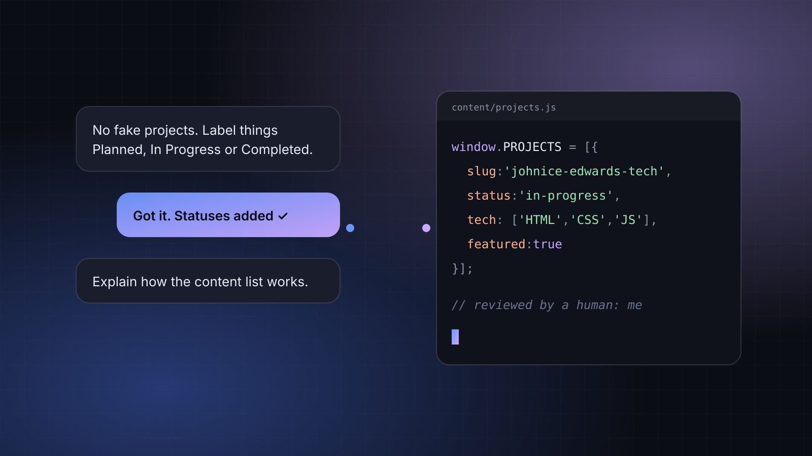

Building This Site With an AI Coding Assistant
I wrote a detailed brief, an AI coding assistant built the first version, and I am responsible for every line. What that process looks like and the rules I set for it.

I want to be upfront about something: the first version of this website was built with an AI coding assistant. I wrote the brief, the assistant wrote most of the code, and now I own it, which means understanding it, maintaining it and fixing it when it breaks.
Since AI tools are one of the things I want to write about, it seemed right to start by documenting how this site came to exist.
Step one: write a real brief
The quality of what you get from an AI tool depends heavily on how clearly you describe what you want. So instead of typing "make me a portfolio," I wrote a detailed brief covering:
- Purpose: a personal tech blog and a portfolio that documents my learning honestly.
- Sections: the Tech Diaries, Projects & Experiments, AI & Automation, Systems, Networks & Cloud, About and Contact.
- Design direction: dark mode first, deep charcoal with electric blue and lavender accents, no stock photos of people staring at laptops.
- Content management: drafts, categories, tags, project status labels, SEO fields and related posts, without redesigning anything each time I publish.
- Technical rules: responsive, accessible, fast, and no unnecessary dependencies.
And one rule I care about most:
No fake testimonials, invented credentials, fabricated employment experience, or made-up projects.
AI tools are very good at producing confident, impressive-sounding filler. A portfolio full of filler is worse than an empty one, so I put that rule in writing from the start.
Step two: inspect before building
I asked the assistant to look at my existing code before changing anything. That mattered, because my existing repository already runs my other website, Johnice Edwards Realty. Replacing it would have taken a live site offline.
Instead, the tech site was built as a separate project with its own repository, using the same approach as the realty site: plain HTML, CSS and JavaScript, no framework, and no build step required to publish.
How the content system works
The part I find most useful is that every article and project is described in one small JavaScript file. Here's what an entry in content/posts.js looks like:
window.POSTS = [
{
slug: 'hello-world', // matches posts/hello-world.html
title: 'Hello, World: Why I Am Documenting My Tech Journey',
description: 'Shown on cards and in search results.',
section: 'diaries', // diaries | ai | systems
tags: ['career', 'cybersecurity'],
date: '2026-10-09',
status: 'published', // or 'draft' to hide it everywhere
featured: true
}
];The home page, the blog page, the section pages, the tag filters and the "related reading" suggestions all read from that list. To publish an article, I write the page, add an entry, and the rest of the site picks it up.
Related posts are picked with a simple scoring rule: shared tags count double, being in the same section counts once.
var score = sharedTags * 2 + (sameSection ? 1 : 0);Nothing fancy, but it means I never have to hand-pick related links.
What "responsible for every line" means
Using an AI assistant doesn't mean I get to skip understanding the code. The way I see it, if my name is on the site, I need to be able to explain how it works. For me, that means:
- Reading through the files and asking questions about anything I don't follow.
- Making changes myself, starting with content, then small styling edits.
- Checking the honesty rules: every project status, every claim on the About page.
Because pretending I hand-wrote every line would break the same honesty rule I gave the AI. Knowing how to direct, review and maintain AI-generated code is a real skill, and it is one I want to get better at in public.
What's next
This site is listed as In Progress on my projects page, and it'll stay that way for a while. Next on my list is getting comfortable editing it myself and writing more articles. I'll document what I learn here.